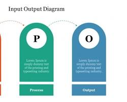

1. 함수란 무엇인가요?
함수(Function)는 특정한 작업을 수행하도록 독립적으로 설계된 코드의 블록입니다. 자판기에 동전을 넣고 버튼을 누르면 음료수가 나오는 것과 같습니다.

위 그림처럼 함수는 입력(인수)을 받아 내부에서 처리한 후, 출력(반환값)을 내보냅니다.
2. 함수의 기본 구조
C언어에서 함수를 만들 때는 반환할 자료형, 함수의 이름, 그리고 매개변수를 지정해야 합니다.
int add(int a, int b) {
int result = a + b;
return result;
}3. 응용 예제
지금까지 배운 것을 토대로 두 숫자를 더하고 빼는 계산기 함수를 만들어 보겠습니다.
💡 실전 응용: 사칙연산 계산기 만들기
main 함수에서 우리가 만든 add 함수와 sub 함수를 호출해 봅시다.
#include <stdio.h>
// 더하기 함수
int add(int a, int b) {
return a + b;
}
// 빼기 함수
int sub(int a, int b) {
return a - b;
}
int main() {
int num1 = 10, num2 = 5;
printf("%d + %d = %d\n", num1, num2, add(num1, num2));
printf("%d - %d = %d\n", num1, num2, sub(num1, num2));
return 0;
}